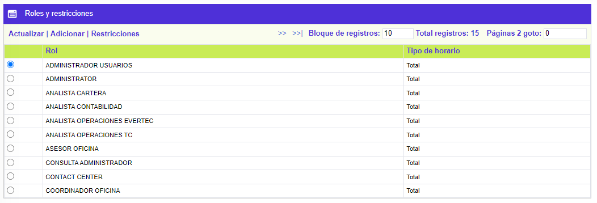
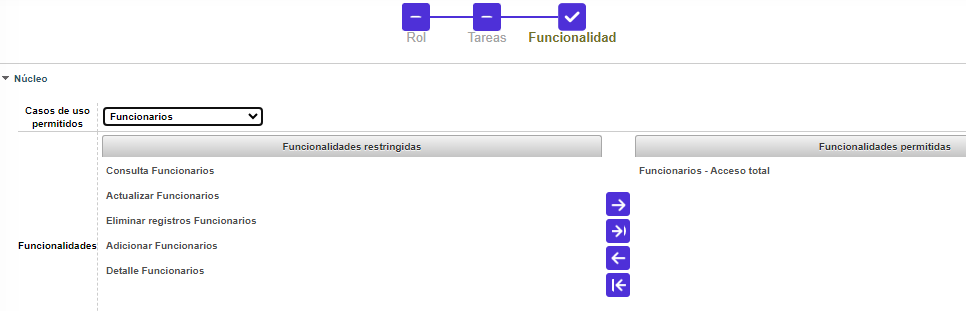
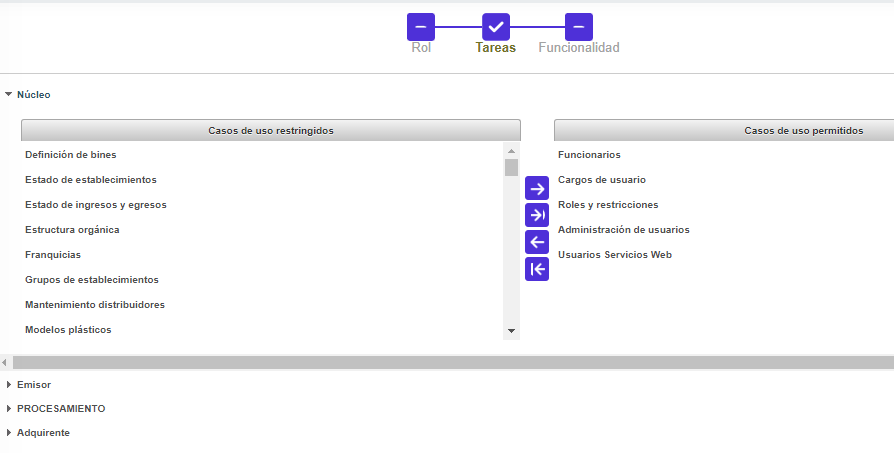
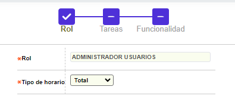
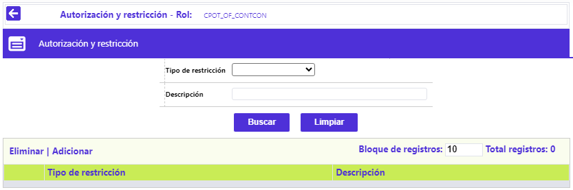

Roles y restricciones
Este formulario permite la consulta y mantenimiento de la tabla en la cual se almacenan los Roles (antes Perfiles) establecidos por la entidad financiera. El formulario contiene los enlaces: Actualizar, Adicionar y Restricciones

Adicionar: Al invocar ese enlace se despliega un wizard de tres pasos: Rol, Tareas y Funcionalidad:

Roles
|
Rol |
Campo alfanumérico de 30 caracteres en el cual se ingresa el nombre del Rol que se desea agregar. |
|
Tipo de horario |
Campo obligatorio, dispone de lista de valores tipo combo, de la que debe seleccionarse entre: Diurno, Nocturno o Total, aquel que mejor describa el turno de trabajo asignado a cada Rol. |

Tareas
|
Núcleo, Emisor TD, Banco de Bogotá o Adquirente |
Menú del sistema, donde se muestran las opciones que componen la funcionalidad de cada módulo, inicialmente se muestran en la parte izquierda de la pantalla, bajo el título de Casos de uso restringidos. |
|
Casos de uso restringidos |
Como se indica más arriba, es la manera en que se muestra la funcionalidad del aplicativo, inicialmente disponible y que puede ser asignada a Rol que se está creando o eventualmente, modificando. |
|
Casos de uso permitidos |
Corresponde a las opciones o funcionalidades que inicialmente estaban en la columna Casos de uso restringidos y que, mediante los botones que aparecen entre ambos bloques, arriban a esta columna, indicando que la entidad le permite al Rol que se está creando o eventualmente modificando, otorgándole permisos de acceso y navegación a los formularios, una vez se concluya con la parametrización correspondiente. |

Funcionalidad
|
Núcleo, Emisor TD, Banco de Bogotá o Adquirente |
Menú del sistema, donde se muestran las opciones que componen la funcionalidad de cada módulo, inicialmente se muestran en la parte izquierda de la pantalla, bajo el título de Funcionalidades restringidas. |
|
Casos de uso permitidos |
Campo que posee lista de valores, creada dinámicamente, a partir de lo parametrizado en el paso anterior Tareas. |
|
Funcionalidades restringidas |
Corresponde al conjunto de operatividades que se ofrece por cada caso de uso, lo que permite, por ejemplo, que a un Rol se permita únicamente, consultar la data, mientras que, a otro, la interacción total con dicha información. |
|
Funcionalidades permitidas |
A partir de lo indicado para el campo anterior, dentro de esta columna queda aquellas operatividades, que estando inicialmente en la columna Funcionalidades restringidas y que, mediante los botones que aparecen entre ambos bloques, arriban a esta columna, indicando que la entidad le permite al Rol que se está creando o eventualmente modificando, otorgándole permisos de acceso y navegación a los formularios. |
Actualizar: Al invocar ese enlace se despliega un formulario en el que el único campo modificable es Rol:

Restricciones: Al invocar ese enlace, se despliega un formulario, que le permite a la entidad, determinar cuáles restricciones aplican al Rol que se está creando o eventualmente modificando.

Adicionar: Al invocar ese enlace se despliega el siguiente formulario:

|
Tipo de restricción |
Campo obligatorio, posee lista de valores de la que debe seleccionarse entre: Campo, Tipo de transacción, Tipo de solicitud, Novedades, Productos, Botones o Plásticos, la funcionalidad que la entidad determine impedir a los usuarios que tengan el Rol que se está creando o eventualmente, modificando. |
|
* Campo |
El campo que se habilita y se muestra como obligatorio, depende de lo seleccionado en Tipo de Restricciones y debe diligenciarse acorde con lo que la entidad, requiera impedir a los usuarios que tengan el Rol que se está creando o eventualmente, modificando. |